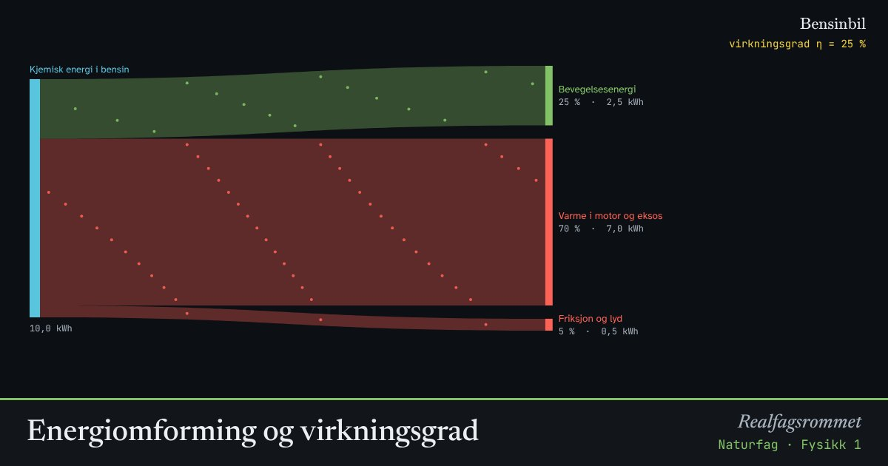

Energiomforming og virkningsgrad
Energi blir aldri borte, men den går over til former vi ikke kan bruke, oftest varme. Virkningsgraden er andelen som blir til den energiformen vi ønsker.
Start animasjonen
Formler
Om animasjonen
Bredden på strømmene er proporsjonal med energimengden. Grønne strømmer er nyttig energi, røde er tap.
Energi av høy kvalitet, som elektrisk energi og bevegelse, kan lett gjøres om til andre former. Varme ved lav temperatur har lav kvalitet. Den er spredt og vanskelig å bruke.
Tallene er omtrentlige verdier for vanlige systemer i dag.
Prøv dette
- Hvor mye av energien i bensinen går til å flytte bilen?
- Sammenlign glødepære og LED: hvor mye strøm sparer du på å bytte?
- Hvorfor regner vi vannkraft som en energikilde av høy kvalitet?
- Kan virkningsgraden noen gang bli over 100 %? Begrunn.
Kompetansemål
- Naturfag: Energi og energiomforming (også i yrkesfagene)
- Fysikk 1: Energiomforming, energikvalitet og virkningsgrad
Mer om energi, varme og svingninger
- Energibevaring: stilling, fart og varme
- Temperatur og varme: is blir til damp
- Spesifikk varmekapasitet: varmt og kaldt blandes
- Partikkelmodellen og den ideelle gassloven
- Fjær og harmonisk svingning
- Energikvalitet: varmepumpe og panelovn
- Vindkraft: hvor mye energi er det i vinden?
- Strømforsyning: vind, sol, vann og gass